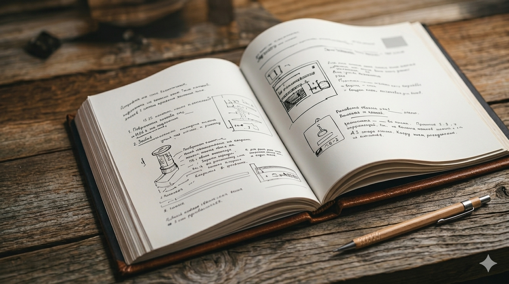

Библиотека PDF
Мануалы оборудования
Загружайте PDF, ищите по названию, бренду и модели и открывайте документы прямо внутри приложения.
Просмотр
Выберите мануал

Выберите документ из списка или загрузите новый PDF.
AI Q&A
Вопросы по мануалам
Мануал не выбран
Выберите документ слева, чтобы спросить именно по нему.